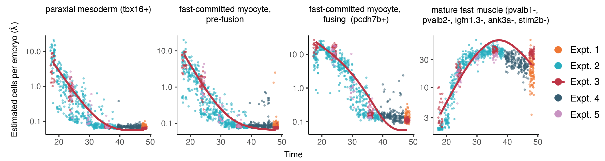
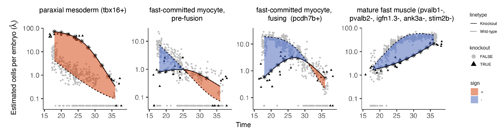

Analyzing time series perturbation data with Platt
Platt can be used to analyze data with multiple time points across perturbations, such as the data found in Saunders, Srivatsan, et al. Nature, in press (2023). This study in includes ~3 million single cells across almost 2000 individual barcoded embryos. It includes 19 timepoints (18-96 hpf) and 23 genetic loss of function experiments. For more information about this dataset, see the ZSCAPE website.
Analysis of skeletal muscle with Platt
This vignette focuses on the skeletal muscle subset. Platt wraps some base Hooke functions to more easily fit kinetic models.
You can see our Hooke kinetics tutorial here.
The function fit_wt_model fits a Hooke model over time. It requires the following inputs:
- cds - a monocle3 cell_data_set object
- sample_group - a column in colData(cds) that specifies how cells are grouped into samples
- cell_group - a column in colData(cds) that specifies how cells are grouped into types or states (e.g. cluster)
- perturbation_col - column name of the perturbation ids
- ctrl_ids - a list of control ids. These will be collapsed as a single control.
fit_wt_model() subsets cds down to just the cells matching ctrl_ids, then fits a per-cell-type abundance trajectory over the timepoints found in interval_col, returning a Hooke cell_count_model (ccm) you can predict from or plot. Two defaults worth knowing about: num_time_breaks (default 4) sets how many spline knots the trajectory gets across the time course — more breaks let the curve bend more, at the cost of needing more data to fit reliably — and nuisance_model_formula_str (default "~1") is where you'd regress out covariates like batch before estimating the trajectory.
muscle_wt_ccm = fit_wt_model(skeletal_muscle_cds,
sample_group = "embryo",
cell_group = "cell_type",
perturbation_col = "perturbation",
ctrl_ids = c("ctrl-inj"))
The functionplot_cell_type_control_kinetics() allows you to view when cell types are at
their peak abundance in the data set. It requires the following inputs:
wt_ccm- a Hookecell_count_modelobject (output offit_wt_model)start_time- start of time intervalstop_time- end of time intervalnew_data- tibble of covariates to predict oncolor_points_by- how to color countsraw_counts- whether to use raw counts of conditionally predicted counts
The plot overlays two things per cell type: the fitted abundance curve predicted from wt_ccm (one line, conditioned on whatever covariates you pass in newdata — e.g. expt = "GAP16" selects that experiment's line), and the raw observed counts as points, colored by whatever column you pass to color_points_by (here, "expt", so you can see how individual experiments scatter around the fitted line even though the line itself was only predicted for one of them). raw_counts = FALSE (the default) plots counts adjusted by the fitted PLN model for the other covariates in newdata, rather than the literal size-factor-normalized counts — set it to TRUE if you want the raw per-sample counts instead of the model's covariate-adjusted estimate.
plot_cell_type_control_kinetics(muscle_wt_ccm,
start_time = 18,
stop_time = 48,
newdata = tibble(expt = "GAP16"),
color_points_by = "expt",
raw_counts = F)

Plotting perturbation kinetics
The function fit_mt_models() fits a kinetic model over time and perturbation. It requires the following inputs:
- cds - a monocle3 cell_data_set object
- sample_group - a column in colData(cds) that specifies how cells are grouped into samples
- cell_group - a column in colData(cds) that specifies how cells are grouped into types or states (e.g. cluster)
- perturbation_col - column name of the perturbation ids
- ctrl_ids - a list of control ids. These will be collapsed as a single control.
Note the cds here — skeletal_muscle_comb_cds — is a combined dataset containing both control and perturbation embryos together, unlike fit_wt_model()'s control-only input above. fit_mt_models() fits one genotype-level model per non-control perturbation it finds (or just the ones named in mt_ids, as below), with each model built to predict both the wild-type and knockout trajectories from that same combined fit — which is how plot_cell_type_perturb_kinetics() below can plot "against the wild type" without being handed a separate wild-type model.
fit_mt_models() returns a tibble, not a single cell_count_model — one row per perturbation, with the fitted model nested in a perturb_ccm column. Since mt_ids here has a single perturbation, pull that one model out before plotting:
skeletal_muscle_comb_cds = load_monocle_objects("~/OneDrive/UW/Trapnell/hooke_manuscript/R_objects/partition_skeletal_ref_gap16_cds_v2.1.0/")
tbx16_msgn1_tbl = fit_mt_models(skeletal_muscle_comb_cds,
sample_group = "embryo",
cell_group = "cell_type",
perturbation_col = "perturbation",
ctrl_ids = c("ctrl-inj"),
mt_ids = c("tbx16-msgn1"))
tbx16_msgn1_ccm = tbx16_msgn1_tbl$perturb_ccm[[1]]
The functionplot_cell_type_perturb_kinetics() plots a given perturbation's kinetics against the wild type.
It requires the following inputs:
mt_ccm- a Hookecell_count_modelobject (output offit_mt_model)start_time- start of time intervalstop_time- end of time intervalnew_data- tibble of covariates to predict oncolor_points_by- how to color countsraw_counts- whether to use raw counts of conditionally predicted counts
Internally, this predicts the same model's abundance curve twice from newdata — once with a knockout = FALSE covariate and once with knockout = TRUE — and plots both, which is why no separate control model needs to be supplied by default. If you do want to compare against a different, separately-fit wild-type model, plot_cell_type_perturb_kinetics() also accepts a control_ccm argument (it defaults to the same perturbation model).
plot_cell_type_perturb_kinetics(tbx16_msgn1_ccm,
newdata = tibble("expt"= "GAP16"),
raw_counts = F) +
xlab("time")

Next: see Graphs to assemble these cell states into a lineage graph.